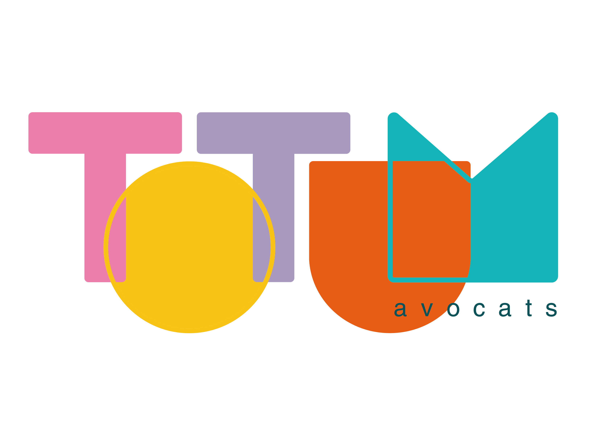

Levée de fonds, cession, ou simplement éviter les pièges qui peuvent vous coûter cher ?
Détecter les erreurs fatales qui font fuir les investisseurs/acquéreurs même si votre business est solide.
Identifier les documents critiques qui pourraient vous manquer et bloquer votre levée/cession du jour au lendemain.
Révéler les risques invisibles dans vos accords, flux financiers, éléments de propriété intellectuelle.